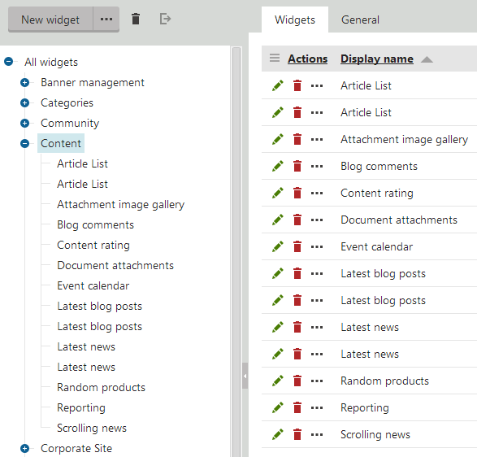
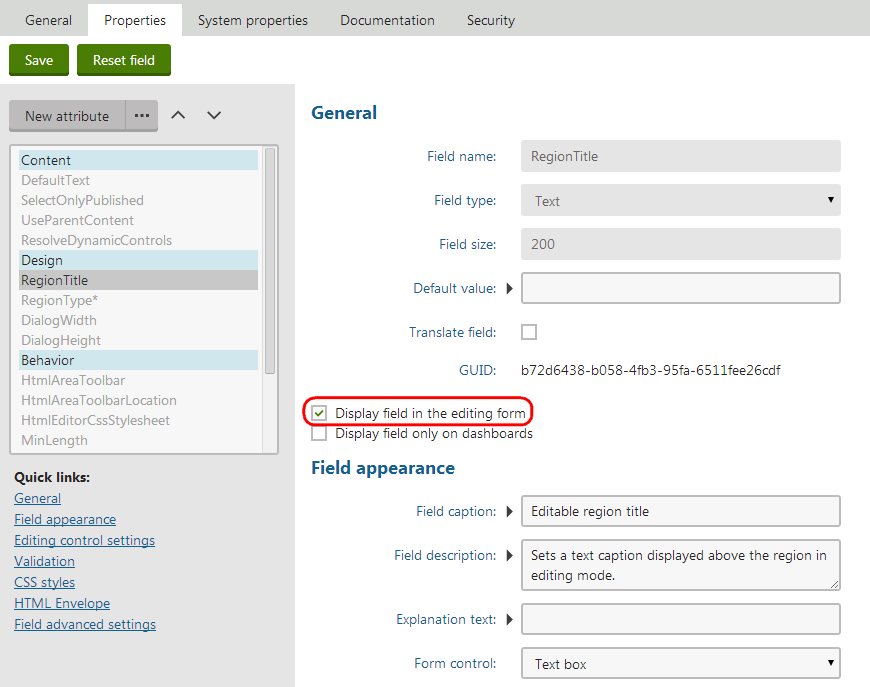

Creating widgets
Every widget is based on a web part. You can create widgets with the same functionality as most web parts in the system. If you require a widget with completely new custom functionality, you need to develop an appropriate web part first.
Tip: You can create web parts that serve exclusively as base templates for widgets:
Create the web part.
Edit the web part in the Web parts application.
On the General tab, set the web part's Type to Widget only.
Click Save.
Such web parts cannot be placed onto the website's pages, but you can choose them when creating new widgets.
To manage widgets, open the Widgets application.
The system groups widgets into categories, organized in a tree structure. The categories do not influence the functionality or usability of widgets in any way – they only determine the structure of the widget catalog. When you select a category, the page displays a list of all widgets in the category.

The widget management interface
To add a new widget:
Click the category where you want to store the new widget.
Click New widget.
The web part selection dialog opens.
Choose the web part that provides the functionality you want for the widget.
Click Save & Close.
The system creates the new widget under the selected category. Continue by defining the widget's properties.
You also need to configure the widget's security settings to determine where it is available (different types of widget zones, the WYSIWYG editor, etc.).
Defining widget properties
Properties are parameters that adjust the behavior of the widget. Users can set the values of properties through a configuration dialog when adding or editing individual widget instances.
Each widget has the same properties as the original web part. When you create a new widget, all of the properties are configured to be hidden in the widget's configuration dialog by default.
To set up the properties of a widget:
Open the Widgets application.
Select the widget in the tree.
Open the Properties tab, where you can manage the available properties:
To make a property visible in the widget configuration dialog, check Display field in the editing form.
If you check Display field only on dashboards, the property appears only when configuring widgets on the widget dashboard sections of the administration interface.
Click Save to confirm the change for each property.
We recommend keeping the widget configuration interface as simple as possible for users.

Making a widget property visible in the configuration dialog
Additionally, you can:
Set the Default value for properties
Modify the appearance and behavior of properties in the configuration dialog
Add additional properties (to have an effect on the widget's behavior, the property must be handled in the code of the original web part)
You cannot:
Remove properties
Change the Field name, Data type or Size of properties
Tip: Click Reset field to load the exact settings from the original web part for the selected property.
Adding macros into the default values of widget properties
Properties use the Default value when users create new instances of the widget. You can set dynamic default values through macro expressions. The system resolves the macros according to the following rules:
If the property is available in the widget's configuration dialog (Display field in the editing form is checked), the macro resolves directly in the dialog when adding new instances of the widget.
If the property is NOT visible in the configuration dialog, the system dynamically resolves the macro when displaying the page containing the widget instance.
Adjusting system properties for widgets
All widgets have a set of default properties for configuring common system functionality. Like standard properties, the system properties are not visible in the widget configuration dialog by default. To allow users to change the values of system properties for widget instances, modify the settings on the System properties tab of the widget editing interface.
You can edit the system properties of a widget just like when working with the regular properties on the Properties tab. Clicking Reset field for a system property returns the settings to their default state (hides the property in the widget configuration dialog).
Changing the default values of widget system properties
When you set a Default value for a widget's system property:
The property's value changes for all instances that were added as in-line widgets, except for instances that have their own values assigned (for system properties that are visible in the editing form).
The value does NOT change for all other types of widget instances that are already placed on the pages of your website.
To learn more about individual system properties, see Reference - Web part system properties (widgets and web parts use the same system properties).
Managing existing widgets
To work with existing widgets in the Widgets application, click the actions above the category tree:
New category (click ... next to the New widget button) – creates a new widget category under the currently selected category.
 Delete selected – removes the selected widget or category.
Delete selected – removes the selected widget or category. Export widget – creates an export package containing the widget.
Export widget – creates an export package containing the widget.
Warning: Deleting a widget does NOT automatically remove instances of the given widget from pages. Any pages containing a deleted widget display an error message instead of the missing widget.
To move widgets between categories:
Select the widget in the category tree.
On the General tab, select the target Category.
Click Save.
On the General tab, you can type a Description and set a Thumbnail image for each widget. You can choose between two types of images:
Image – upload a standard image file (for example a png). The recommended thumbnail image size is 64x64px.
Font icon class – enter the name of a CSS class that defines a font icon.
Users can see the description and thumbnail in the widget selection dialog.
If you need to rename a widget category, select it in the tree and switch to the General tab. You can also change the folder's icon by entering a Category image path leading to an alternate image file (the recommended image size is 16x16px).
Using custom layouts for widgets
Layouts allow you to modify the appearance and design of widgets, or even add further content. You can choose one of the layouts defined for the parent web part for each widget:
In the Widgets application, select the widget in the category tree.
On the General tab, select the required Layout (options are only available if the parent web part has at least one custom layout).
Click Save.
The system applies the selected layout to all instances of the widget across all sites.
Tip: If you wish to use a different layout for certain instances of the same widget, make a clone of the widget and assign the alternative layout.
Disabling the initial configuration dialog
You can configure widgets to skip the configuration dialog that opens when adding widget instances onto pages. This saves time when working with widgets that usually use the default property values.
In the Widgets application, select the widget in the category tree.
On the General tab, check Skip initial configuration.
Click Save.
When adding new instances of the widget, the system directly places the widget onto the page without opening the property configuration dialog.